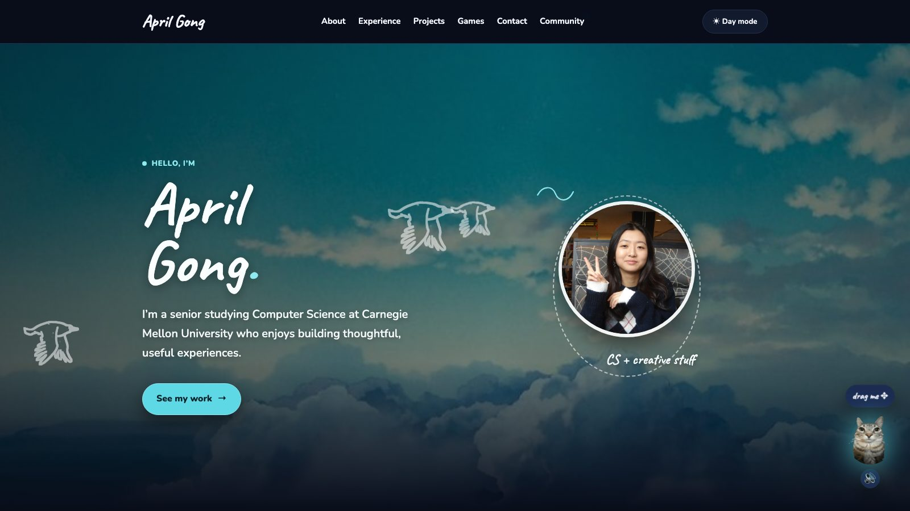
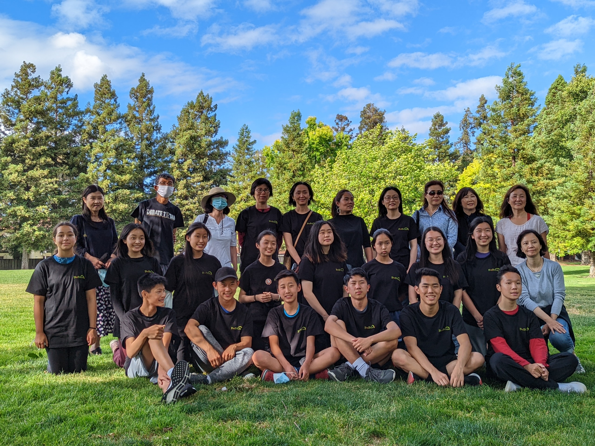
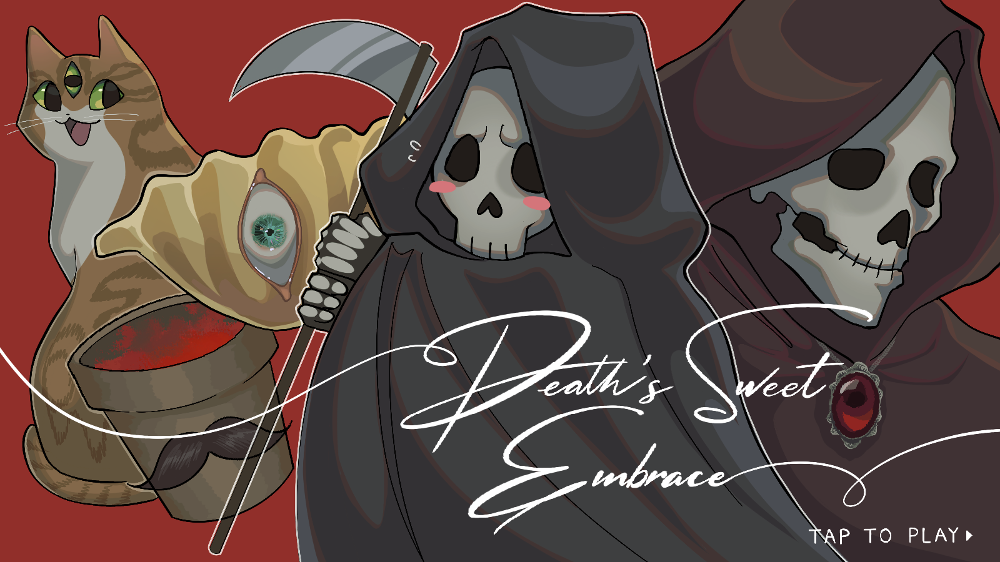
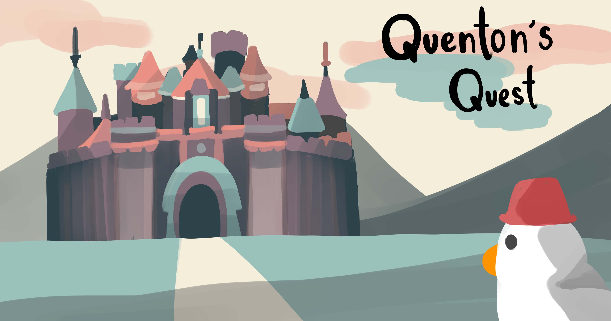
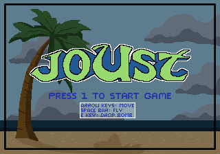
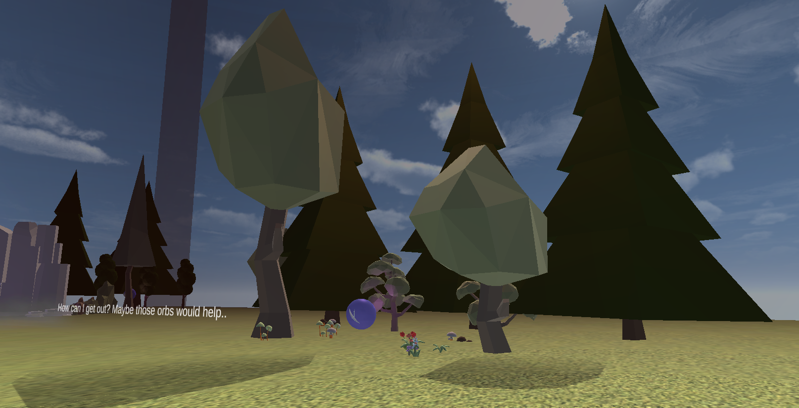
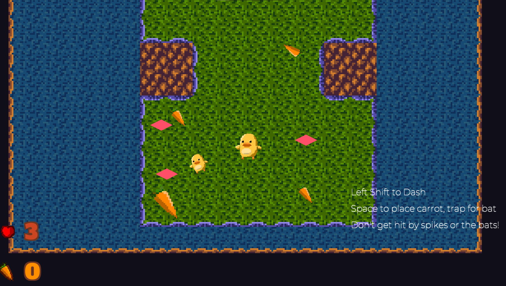

Software Engineer Intern · Google
Built systems that automate hardware testing, capture and triage test failures, and prevent double-scheduling. Migrated a monolithic triage framework to a stateless, skill-based architecture.
Hello, I’m
I’m a senior studying Computer Science at Carnegie Mellon University who enjoys building thoughtful, useful experiences.
See my workCS + creative stuff
About
I’m interested in creating things for the web, learning new tools, and solving problems with care. Outside of computer science, I paint in oil and acrylic, play piano and guitar, explore new food, and love to travel. This space is where I share the work and ideas I’m exploring.
Experience
Built systems that automate hardware testing, capture and triage test failures, and prevent double-scheduling. Migrated a monolithic triage framework to a stateless, skill-based architecture.
Built and launched a client-side beacon system for the Amazon retail homepage across 18 regions, with an AWS pipeline for real-time performance metrics.
Supported 15-112, Fundamentals of Programming and Computer Science, through recitations, office hours, one-on-ones, and feedback on coursework.
Developed adjustable data-visualization and chatbot GUI prototypes with Python, Tkinter, Matplotlib, Pandas, and OpenAI's API.
Developed a multi-label lesion-classification model, analyzed image-detection results with SQL, and supported a product marketing campaign.
Projects

This personal site: a simple home for my work, interests, experience, and contact information.
View code on GitHub
The website I built for Bobtutor, a nonprofit tutoring organization connecting volunteers and students through accessible online learning opportunities.
Visit bobtutor.orgA future project will live here, with its story, visual preview, and relevant links.
Games
I also make games - from programming and production to pixel art. Find the full collection on itch.io

A role-playing adventure about a baby grim reaper restoring lost spirits’ memories. I was the producer and a programmer.
Download on itch.io
A pixel-art fighting game about a duckster rescuing Princess Pea. I created art and contributed to the code.
Download on itch.io
A beach-themed remake of the arcade classic Joust. I contributed as a programmer.
Download on itch.io
A downloadable simulation game for Windows and macOS.
Download on itch.io
A downloadable game for Windows and macOS.
Download on itch.ioContact
Have a question or want to work together? I’d love to hear from you.
Community
Supporting a student-led Christian community that brings together college students in Pittsburgh for fellowship, worship, Bible study, and care for one another.
Learn about ACFLeading an organization that connects Christian fellowships at CMU through campus-wide activities, service, and inter-fellowship collaboration.
Learn about IFALed design for the Carnegie Mellon Informatics and Mathematics Competition from 2024 to 2026, a student-run organization that hosts math and computer science competitions for high school students worldwide.
Learn about CMIMC